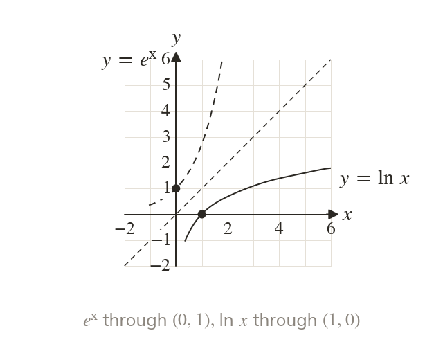
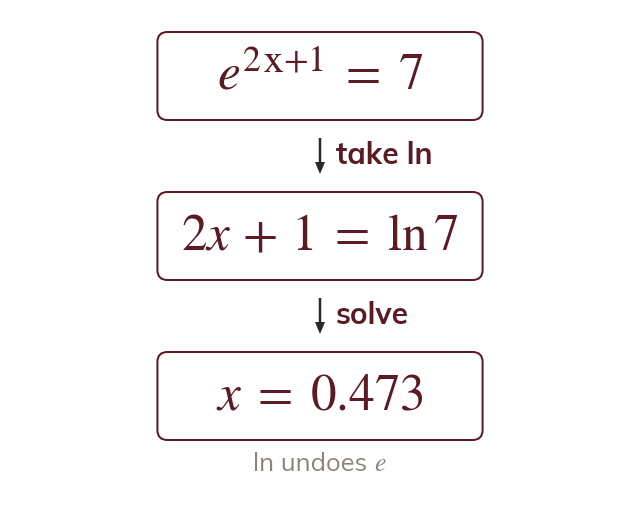
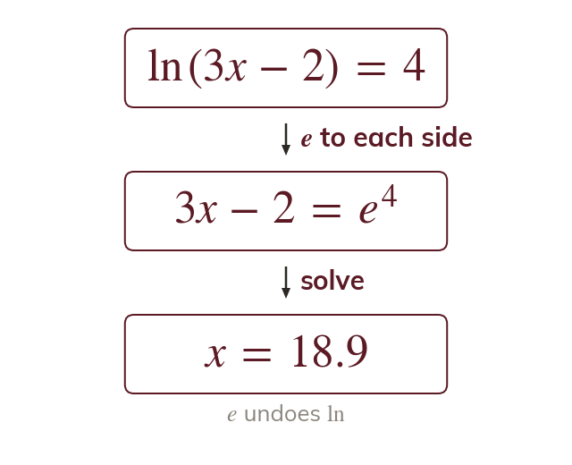
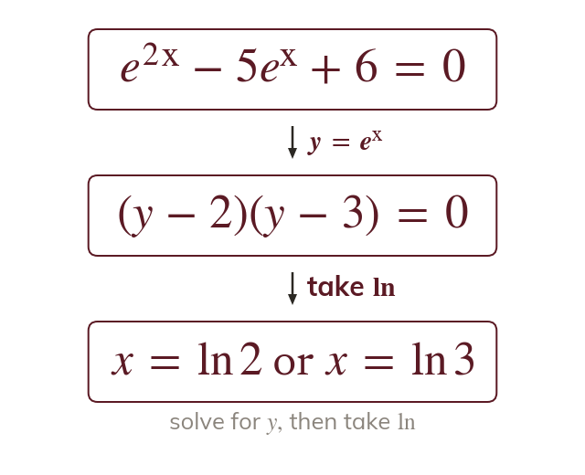
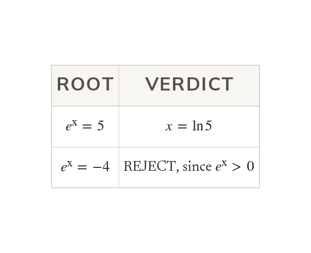
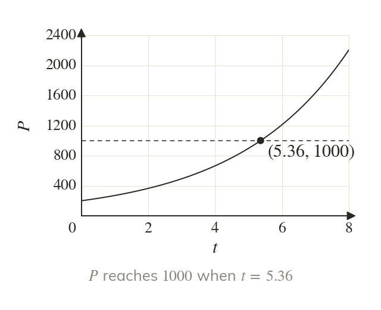

ln undoes e
means logₑ so and The graph of is the reflection of in the line
ln is the logarithm to base so it undoes just as log₂ undoes It solves equations involving and finds the time in an exponential model, and in logarithms straighten curved data.
Work down the page at your own pace. Write every answer in your book first, then click to check it.
Read each card, then follow the worked examples one step at a time.

means logₑ so and The graph of is the reflection of in the line

To solve take ln of both sides, so
Then = (ln

To solve raise to the power of each side, so
Then
Pick an answer. If it's wrong, the feedback tells you which mistake it was.
Write the blanks in your book first, then tap each one to check.
Read each card, then follow the worked examples one step at a time.

so is a quadratic in With it factorises to so or

is positive for every so a root is rejected. Only the positive roots give values of

In reaches when
Taking ln gives so
Pick an answer. If it's wrong, the feedback tells you which mistake it was.
Write the blanks in your book first, then tap each one to check.
Finished? Next lesson: 14.8 Logarithms and Non-Linear Data.
For each skill, tap the one that is true for you today. Your Revise pages start with anything you mark Not yet.
Your ratings are saved on this device only.
Log in, then search for a code to practise that skill.